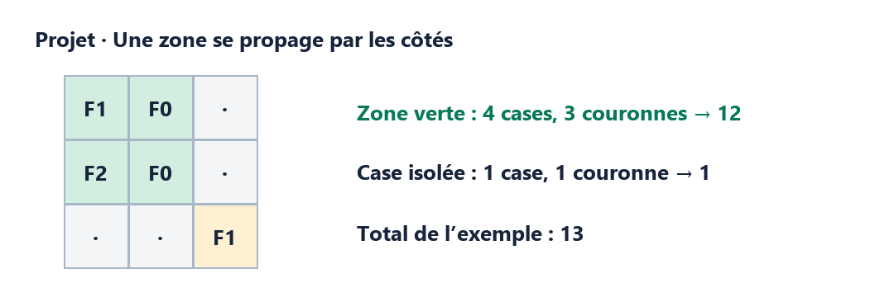

Comprendre le cours
1. Décider ce que chaque structure représente
Le royaume est une grille de cases. Une coordonnée (ligne, colonne) permet d’identifier une case. Distingue les cases vides, le château et les terrains. Dans le fichier de tuiles, un domino tient dans un triplet avec un identifiant et deux terrains. La couleur décrit le terrain et le nombre de couronnes sert au score.
Dans le projet, une liste de cases libres accompagne le royaume. Après une pose autorisée, tu dois modifier les deux structures ensemble. Si tu changes le plateau mais oublies de retirer une case de la liste, un futur parcours risque de proposer une position déjà prise. Vérifie cette propriété après chaque pose.
2. Valider une pose avant de changer le plateau
Une position de départ et une direction déterminent les deux cases d’un domino. Commence par calculer ces coordonnées. Vérifie ensuite que les deux cases sont dans le royaume et vides. La règle de connexion se vérifie sur les voisins orthogonaux. Au moins un côté doit toucher au château ou à un terrain de la couleur correspondante.
domino_valide répond par un booléen sans effet de bord. ajoutDomino effectue la pose lorsque l’appelant a validé le coup. Pour chercher une pose possible, parcours les cases disponibles et les directions. Tu peux t’arrêter dès la première possibilité.
3. Manipuler la pioche et l’ordre du tour
Travaille d’abord sur les tuiles lues depuis le CSV. Vérifie leur représentation et la taille attendue de la liste. La pioche et le bloc de choix ont des rôles différents. Dans extraire_premier_bloc, on crée une nouvelle liste avec les quatre premières tuiles, triées par identifiant. L’état initial doit rester intact. La phase qui retire les éléments de la pioche se teste séparément.
Au tour normal, le dépôt contient les tuiles déjà réservées et le choix contient les nouvelles. Parcours le dépôt dans l’ordre de ses tuiles. Pour chaque tuile, son joueur l’utilise puis réserve dans le choix. Seulement après les quatre actions, remplace le dépôt par le bloc de choix. Au premier tour, on réserve seulement. Lorsque A commence, l’ordre des réservations est A, B, B, A.
4. Compter une zone connectée une seule fois
Une zone est un groupe de cases de même couleur où on peut se déplacer par les côtés. Une diagonale seule ne relie pas deux cases. Démarre depuis une case, marque-la visitée, ajoute ses couronnes puis regarde les voisins de même couleur. Chaque appel récursif doit repartir avec la liste de visites à jour.

Le score d’une zone est nombre de cases × nombre de couronnes. Pour le total, parcours le plateau. Si une case appartient déjà à une zone comptée, passe à la suivante. Garde les marques de visite dans une structure auxiliaire pour préserver le royaume.
Du cours aux TD et TP
Questions TD & TP
Sujet §4.2.5 · Écrire domino_valide
Énoncé. Déterminer si le domino est autorisé à la position et dans la direction données, sans modifier le royaume.
- Calcule la deuxième coordonnée à partir de la première et de la direction. Si une case sort ou est occupée, renvoie faux avant de parcourir les voisins.
- Pour chaque partie du domino, inspecte ses voisines existantes. Si l’une est le château, ou si une voisine occupée porte la même couleur, renvoie vrai.
- Teste le bord, une collision, le contact avec le château, le contact avec la bonne couleur et la diagonale seule. Le squelette attend deux vrais puis trois faux pour ses cinq cas.
Sujet §4.3.2 · Extraire un bloc sans changer la pioche
Énoncé. Obtenir les quatre premières tuiles sous la forme d’une nouvelle liste triée par identifiant, avec un tri écrit à la main.
- Copie les quatre premières tuiles dans un bloc. Pour un tri par sélection, cherche dans la partie encore non triée l’identifiant minimal et échange sa tuile avec celle de la première position libre.
- Répète pour les positions suivantes. Exemple avec les identifiants
31, 7, 16, 4. Le premier échange met 4 devant, puis les deux suivants conservent 7 et 16 avant 31. - Compare la pioche à une copie réalisée avant l’appel. Le bloc retourné est trié et la pioche d’origine conserve ses éléments dans le même ordre.
Sujet §4.5.4 et §4.5.5 · Vérifier l’ordre du tour
Énoncé. Programmer le premier tour et un tour normal en respectant l’ordre des pions.
- Pour le premier tour, fixe le tirage dans un test de façon qu’A commence. Lance les réservations dans l’ordre A, B, B, A. Les quatre tuiles doivent être réservées et aucun plateau ne change encore.
- Pour le tour normal, utilise un dépôt de test dont les pions appartiennent dans l’ordre à B, B, A et A. Prépare le nouveau choix. Les actions doivent donc suivre B, B, A et A, même si A avait commencé la partie.
- Après chaque action, vérifie le plateau du joueur et le retrait de son pion du dépôt. Après les quatre actions, compare le nouveau dépôt avec les quatre tuiles réservées dans le choix.
Sujet §4.6.2 et §4.6.3 · Retrouver les 27 points de la forêt
Énoncé. Sur le royaume de test fourni, retrouver les couronnes et le score de la forêt qui contient (0,0).
- Si une coordonnée a déjà été visitée, renvoie le cumul existant. Sinon, marque-la avant de descendre vers les voisines. Ainsi deux cases adjacentes ne s’explorent pas l’une l’autre sans fin.
- Ajoute les couronnes de la case. Pour chaque voisin de la même couleur encore libre de visite, transmets le cumul à l’appel récursif et reprends la valeur qu’il retourne.
- Dans ce test, la région contient 9 cases et 3 couronnes. Le score vaut
9×3=27. Un score différent invite à comparer les coordonnées collectées avec le plateau avant de toucher à la multiplication.
Sujet §4.6.4 · Obtenir les totaux 28 et 54
Énoncé. Retourner le score total d’un royaume partiellement ou totalement rempli, sans changer son contenu.
- Parcours toutes les coordonnées. Pour une case de terrain encore non comptée, récupère son score de zone et ses coordonnées. Ajoute le score au total, puis toutes ces coordonnées à l’ensemble des cases comptées.
- Refais les deux tests qui doivent donner 28 et 54. Si une région compte deux fois, dessine les cases prises à chaque appel pour trouver où le marquage global est oublié.
- Vérifie un royaume avec deux zones diagonales de même couleur et compare l’état du plateau avant et après la fonction. La diagonale donne deux scores distincts et le royaume ne change pas.